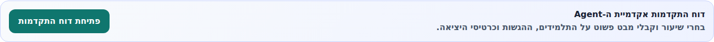
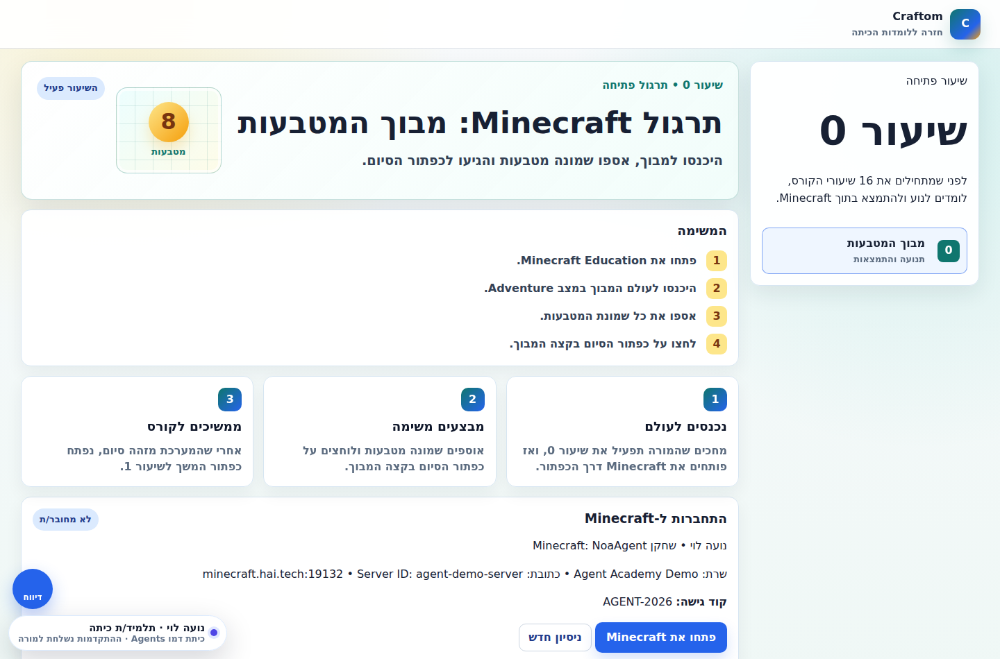

דרך ההייטק · אקדמיית ה-Agent
מדריך שימוש למורה
כיתה מוכנה מראש
מסמך קצר ללמי ושרית: איך לעבוד בפועל עם הלומדה כשכבר קיימות כיתות, תלמידים, משתמשי Minecraft והרשאות. בלי הקמת כיתה ובלי יצירת תלמידים.
מה חשוב לדעת לפני שמתחילים
הכיתות והתלמידים כבר הוקמו במערכת. המורה לא צריכה ליצור כיתה, לא להוסיף תלמידים ולא להנפיק קודי כניסה.
העבודה של המורה היא לנהל את השיעור: להיכנס למסך המורה, לבחור את הכיתה, לפתוח את שיעור 0/Minecraft, לעקוב אחרי התלמידים, לסיים שיעור ולקבל דוח.
אם חסר תלמיד, קוד, משתמש Minecraft או הרשאה — זו לא פעולה של המורה בזמן שיעור. מעבירים לאחראית המערכת/תמיכה.
1. כניסה למסך המורה
- פותחים את מסך המורה.
- נכנסים עם מייל וסיסמה של המורה.
- אחרי הכניסה מופיע לוח הכיתות של המורה.
אם המורה כבר מחוברת, המערכת תפתח ישר את לוח הכיתות.

2. בחירת הכיתה הקיימת
- בלוח הכיתות מחפשים את הכיתה הרלוונטית.
- בודקים שבכרטיס הכיתה מופיעה אקדמיית ה-Agent.
- פותחים את ניהול הכיתה/הלומדה.
אין צורך לערוך את רשימת התלמידים או את קודי הכניסה. זה כבר מוכן.

3. פתיחת שיעור 0
שיעור 0 הוא שיעור הכניסה לעולם Minecraft. במסך שיעור 0 המורה רואה את מצב השרת, כרטיסיות תלמידים, וקוד כניסה לשרת.
- נכנסים לניהול אקדמיית ה-Agent של הכיתה.
- פותחים את שיעור 0.
- לוחצים על הפעלת Minecraft/הפעלת שיעור אם השרת לא פעיל.
- ממתינים עד שמופיע שהשרת פעיל לכיתה.

4. מה לתת לתלמידים בזמן השיעור
התלמידים כבר קיימים במערכת. במהלך השיעור המורה צריכה להכווין אותם להיכנס ללומדה ול-Minecraft לפי הפרטים שמופיעים במסך.
- מוודאים שהתלמידים נכנסו ללומדה עם הקוד שקיבלו מראש.
- מבקשים מהם לפתוח את אקדמיית ה-Agent.
- בשיעור 0 נותנים להם את פרטי הכניסה לשרת Minecraft שמופיעים במסך המורה.
- אם תלמיד לא מצליח להיכנס, בודקים אם הוא מופיע בכרטיסיות התלמידים ומה סטטוס Minecraft שלו.


5. מעקב אחרי תלמידים בזמן שיעור
במסך המורה מופיעות כרטיסיות התלמידים. דרכן המורה יכולה לראות מי נכנס, מי מחובר, מי התקדם, ומי צריך עזרה.
- תלמיד שלא מופיע כפעיל כנראה לא נכנס נכון ללומדה או ל-Minecraft.
- אם יש דוח או סטטוס חריג, פותחים את פרטי התלמיד.
- אם יש בעיית משתמש Minecraft, מעבירים לתמיכה/אחראית מערכת.
כדאי להשאיר את מסך המורה פתוח בזמן השיעור. הוא מתעדכן אוטומטית.
6. סיום שיעור 0
בסוף שיעור 0 המורה סוגרת את השיעור מתוך המסך. הפעולה אמורה להוריד את שרת Minecraft ולהפיק דוח סוף שיעור.
- גוללים לאזור סיום שיעור 0 מתחת לכרטיסיות התלמידים.
- לוחצים סיום שיעור 0.
- ממתינים שהמערכת תאשר שהשרת ירד.
- קוראים את דוח סוף השיעור שמופיע במסך.
אם מופיעה שגיאה שהשרת עדיין פעיל, לא מסמנים ידנית שהשיעור הסתיים. צריך לבדוק/לנסות סגירה מחדש.
7. דוח סוף שיעור
אחרי סיום שיעור 0 אמור להופיע דוח מהמוניטור. הדוח מסכם פעילות בכיתה: כמה תלמידים נכחו, מי סיים, פעילות בצ'אט/אירועים, ופירוט מלא.
- התקציר נותן תמונת מצב מהירה.
- הדוח המלא נפתח בלחיצה ונשאר פתוח גם אם המסך מתרענן.
- הדוח נשאר מוצג גם אחרי שהשרת כבר ירד.
אם התקציר נראה ריק אבל הדוח המלא מראה פעילות, שולחים צילום מסך לתמיכה.
8. הפעלת שיעור 0 מחדש
אם כבר יש דוח והשרת כבוי, יופיע כפתור להפעלת שיעור 0 מחדש.
הכפתור עושה את זה:
- מעלה מחדש את עולם Minecraft של שיעור 0.
- מנקה את מצב השיעור הקודם מהלוח החי.
- מאפס את נתוני ריצת המבוך הקודמת.
- לא פותח את שיעור 1 ולא מקדם את הכיתה לשיעור הבא.
משתמשים בזה רק אם רוצים לעשות שוב את שיעור 0 עם אותה כיתה.
9. עבודה בשיעורי Agent אחרי שיעור 0
אחרי שיעור 0 התלמידים ממשיכים לשיעורי Agent. המורה לא צריכה להקים שום דבר חדש: רק להפנות לשיעור הנכון ולעקוב אחרי ההתקדמות.
- התלמידים נכנסים לאקדמיית ה-Agent.
- פותחים את השיעור הרלוונטי.
- מבצעים תרגול קוד/Agent.
- במקומות המתאימים עוברים ל-Minecraft ומיישמים.
- בסוף מגישים תשובה/כרטיס יציאה.


10. מעקב התקדמות
מסך המורה כולל דוחות התקדמות. המורה יכולה לראות מי עובד, מי התקדם, ומה מצב ההשלמות לפי שיעור ותלמיד.


צ'קליסט קצר לפני שיעור
- נכנסתי למסך המורה.
- בחרתי את הכיתה הנכונה.
- פתחתי את שיעור 0 אם זה השיעור הראשון.
- בדקתי ששרת Minecraft פעיל לכיתה.
- לתלמידים יש פרטי כניסה ללומדה.
- לתלמידים יש משתמש Minecraft משויך.
- אני רואה את כרטיסיות התלמידים במסך.
- בסוף שיעור 0 לחצתי סיום וקיבלתי דוח.